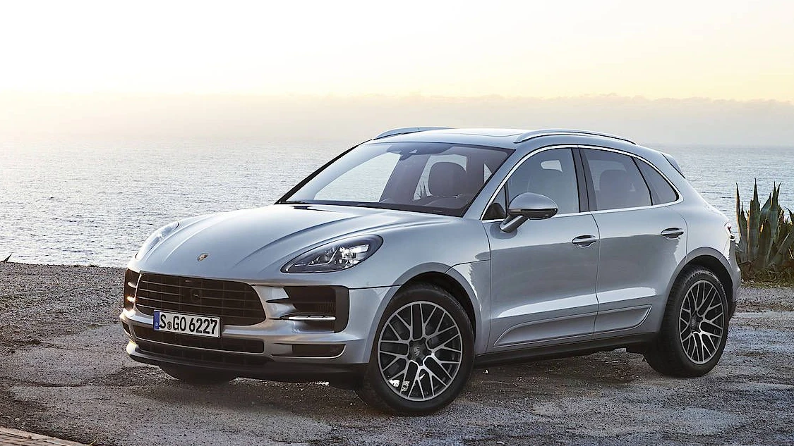

Porsche
Porsche Macan
أصغر سيارة SUV من بورشه، تجمع بين الأداء الرياضي والفخامة والعملية للاستخدام اليومي.
أصغر سيارة SUV من بورشه، تجمع بين الأداء الرياضي والفخامة والعملية للاستخدام اليومي.

| المحرك | 2.9 لتر V6 توين تيربو |
| عدد الأسطوانات | 6 |
| القوة | 440 حصان |
| عزم الدوران | 550 نيوتن متر |
| ناقل الحركة | 7 سرعات PDK |
| نظام الدفع | رباعي AWD |
| التسارع (0-100) | 4.5 ثانية |
| السرعة القصوى | 272 كم/س |
| عدد المقاعد | 5 |
| نوع الوقود | بنزين |